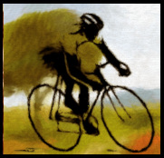
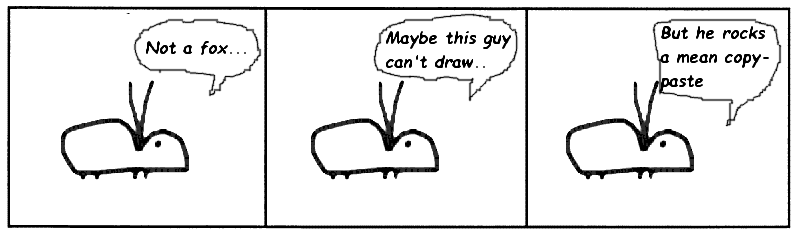
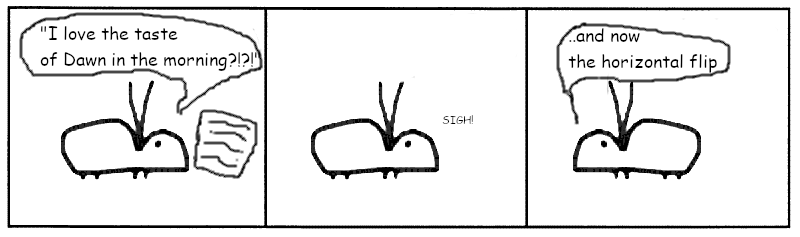

3
A Quick (and Hopefully Not Too Painful) Introduction to Dawn (with a Badly Drawn Rabbit


So this is the animal that I can draw. No, wait, I remember there were also a
couple of Moles on Motorcycles in the book. Maybe they'll show up later

Before we get too comfortable, I have to tell you a weird thing about Dawn. Have you ever
heard of "Code Smell"? If yes, please forget all you have heard. While Dawn doesn't smell, Dawn will exhibit a scent whilst using it,
and the fragrance is of your choosing. It is an olfactory explosion, it is not just scent it is flavor. Actually Dawn comes
in different flavors
So you can change the flavor of all the examples and choose the one you like the best.
A future expansion pack will describe how to create your own flavor. Like Chicken Tikka Masala
1. Language and Well it's not just a language

My conscience won't let me call Dawn a computer language. That carries the conventions of many years of how you
are supposed to construct a computer language. If you want you can call the flavors languages, because they follow a somewhat
similar convention
One convention is that a computer language exits in text files, and you can control each and every character of this so called
sourcecode. Not so in Dawn. For the sake of flavors, when you edit your source with a particular flavor, this source gets translated
into the Dawn native form, which is the saved version of source. Then the flavor translates it back to you, prettyfying it on the way
You can say that the flavor is the bridge between the human readable domain and the computer readable domain. Actually they are both quite
readable, so the flavor is more like syntax sugar - but you can control it, should you be a syntax diabetic
The flavor is the color of your bikeshed. Prefer LISP style backets? Roll a flavor that allows that. Pascal BEGIN END? Ditto.
Python significant whitespace? Consider it done. PASCAL := assignments? Yessir
Read the following aloud to yourself (with Flavor set to "Basic Pretty").
Just read the above aloud, by glancing at each line and saying what it actually asks the language to do. For instance
"Hello" bound to a Tester bound to the Console
The Number 42 bound to the Console
The Number 5 bound to the Times resource, which together with the String "Hello" bound to the Console
The list of "Hello" and "World" concatenated, then to the Console
The list of 0.1 and 0.2 added, then to the Console
Press run in the console above and watch as the resources wake up and shake each
other's hands. Tastes pretty good, huh
Go ahead and try the other flavors - you know you want to
The Pure flavor is the storage format, the pure form of Dawn. Even though you often use a flavor, you must know about the Pure Dawn.
So shift Flavor to Pure while reading the next part. From here on, whenever I show a snippet it is Pure Dawn unless I
say otherwise
Dawn's most basic building block is the resource. You snap the resources together with >>. You find the resources using
a URI (Universal Resource Identifier), and >> binds them together to form your program
One URI rule for them all,
one URI to find them,
One URI to bring them all
and in the Dawn scope bind them.
"Precious", I mutter to myself while writing this. But yes it is - because you know the URI already, right now your browser is using an URI to
find this page - it points to something like http:poignant.guide/chapter-3.html, and the resource in this case is a web page,
which turns out to be chapter 3 of the Not So Poignant Dawn Tutorial. URIs start with a scheme - browsers usually use the http scheme
In Dawn, everything is a resource that can be fetched by a URI. An image, a programmatic loop, a number, text, whatever. In the example
notice how the number 42 is fetched using the scheme called Number and the text "Hello" is fetched using the scheme String
So if you really want to speak this sentence (you probably shouldn't), say "Number 42 bound to the String 'Hello' through the Tester, fetched via the Console scheme".
You can use bound, tied, connected to, on top of or whatever relational phrase of your preferral
If you get tired of Beck's mutated Spanish
you can crank up your speakers, press run and listen to Three times "Orale!" spoken in Spanish
Notice that the string %C3%93rale%21 is URL-encoded. That's because the URI is the URL-encoded version of "Orale!". Pure Dawn is
very strict about what goes in a URI - the same rules you already use every day in your browser bar
That last snippet is bound to ask "wait, did I really just compute something astronomically large?".
Yes. Numbers in Dawn are BigRational by default. There is a TheQuestion example program
in the codeexamples folder, and it computes 3 cubed + 3 cubed + 3 cubed = 42 - a computation
that regular floats famously fumble, delivered to the Console scheme as a list of three cubes added together.
TheQuestion is a celebrity in the Dawn community and well worth your evening
Before continuing, let me settle one thing. You might be reading this and thinking "now I need to learn
all the resource URIs in Dawn to write programs". You don't. Most of them are obvious by name
(number.add adds, string.concatenate concatenates, boolean.not negates). The others you discover
as you go - the same way you discover the names of tools at your local hardware store. There is no
official "Dawn standard library" you have to memorize. There's a pile of bricks; you snap the ones you need
2. Parts of Speech: How to Speak a URI Out Loud

Now then. In any sentence in Dawn you will find the following parts of speech. They are small, and there are not many of them, and
once you can spot them you can read any program out loud like a poem. The parts of speech are: URI, binding,
number, string, boolean, and list. Then three minor ones that we will get to presently.
You will also meet the occasional scheme, operator, keyword, and comment.
Comments are not really words - they are more like the silence between sentences, which I find very pleasant
Most of these words belong to two large families: the family of things that have a value, which we call values, and the family of things that
compute a value, which we call operations. Note the convention: values start with a Capital letter (String, Number, Boolean) and
operations start with a lowercase letter (string.concatenate, number.add). They are both resources. They are both
reachable by URI. The capital is just a hint to you, the reader, so you know whether to expect a thing or a verb
URI. A URI is a string that uniquely names a resource. In Dawn, URIs are everywhere - they are the nouns of the
language. A URI has a scheme (the part before the colon) and an identifier (the part after the colon). The scheme answers the
question "where do I look?", and the identifier answers "what do I find?". For example in Number:42, the scheme Number
says "go to the Number handler", and 42 says "give me forty-two
Some URIs are very short. Console is the Console scheme with an empty identifier, which means "give me the Console sink as
it is". Some URIs are long and full of slashes and tildes. file:/home/dawn/list.txt looks just like the URI in your browser bar,
because it is the same kind of URI. Dawn does not care. It resolves them all the same way
Binding. The binding operator, which I have been writing as >>, snaps together the URI on its
left with the URI on its right. Whatever comes out of the left resource is fed into the right resource. That is the whole trick.
A whole Dawn program is just a chain of these snaps. Number:42 >> Console means "make 42, then push it at the Console"
You may also see bindings with selection. ?input=foo says "send the result to the input named foo", and #output=bar
says "read from the output named bar". Most of the time you do not need these, because Dawn picks a sensible default. When you do need them is
when a resource has several inputs or several outputs and you want to pick which one - like dialling a phone extension
Number. A number is a value resource of scheme Number. Number:42 is forty-two in decimal. Number:FFFF#16 is
the hexadecimal number FFFF, which is 65535 in decimal. Number:1_000_000 is one million with underscores so you can read it. Number:1.5e2
is 150 in scientific notation. The hash and the digit after it is the base: #2 for binary, #16 for hex. If you leave the base off, you
get good old decimal. Numbers in Dawn are BigRational by default, which means the answer is always exact, even when it is gigantic
String. A string is a value resource of scheme String. String:Hello is the five-character string "Hello". String
alone is the empty string. Special characters must be URL-encoded, because the URI is the URL: %20 is a space, %21 is an exclamation mark,
%C3%93 is a capital O with an acute accent. If you don't URL-encode, you will get a complaint, and Dawn will tell you exactly which character
it tripped on
Boolean. A boolean is a value resource with two possible identifiers, true and false, in scheme Boolean. Boolean:true
and Boolean:false. Booleans are handy for asking questions and for picking one of two paths with a Boolean:if resource. They are the
traffic lights of the language. Red and green, with no amber because you do not need it - the language is happy to wait for a yes or no
List. A list is a value resource of scheme List. You build a list by putting several values between brackets
[Number:1 Number:2 Number:3]>>List.add
This builds a three-number list and adds them up (List.add is one of those wonderful operations that takes a whole list as its single input).
Lists can be of mixed types - a string and a number and a boolean, all in the same brackets, all together in one snug little resource.
You can also nest them: lists inside lists inside lists, like Russian dolls of data
Input and output markers. Inside a resource, the inputs are named in_type (e.g. in_String,
in_Number) and the outputs are out_type. Some inputs have an extra name after the type - in_Number_left
and in_Number_right for the two arguments of an addition, say. If you want to be explicit, you select the input by name in the URI with
?input=name. Resources can also have a few special markers: _$all means "a catch-all input that does not disappear
when connected", and _$explicit means "show up only if you explicitly address me
Schemes. A scheme is the first half of a URI. Every resource belongs to some scheme. The scheme is the family, and the
identifier is the name. The scheme says "how this URI is parsed". Number, String, Boolean and List are the basic schemes for values, and the lowercase
versions (number, string, boolean, list) are the schemes for operations. Schemes can also be domains - file, http,
smtp. If you have a scheme for your toaster, Dawn can reach it
Operators. The main operator you will meet is >>, the binding operator. There is also the dot, which is just
part of a URI and not really an operator. And later you will meet square brackets and parentheses, but those are mostly sugar for List: and Group:
resources, which you can also spell out in full. Dawn is proud of having almost no operators - it's a small language dressed in a big hat
Keywords. A few small special-purpose words: _$all, _$explicit, and a handful of group names like
_$acc for accumulation. You mostly encounter them inside resource implementations, not in day-to-day programs
Comments. A comment begins with a hash # and runs to the end of the line. Dawn treats it as the absence of a URI on that
position. So a comment is not a sentence; it is a word removed from a sentence. The compiler is grateful, because it did not have to read it. # here is a comment
That's the whole grammar, more or less. Everything else you'll meet is a flavour on top. There's a small pleasing rhythm to a Dawn program - URI,
binding, URI, binding - the same beat as "I think therefore I am", only with more brackets. Read one aloud. I dare you to read this aloud
Number:2>>number.add:>>Number:3
"The number two bound to number-add, which is bound to the number three." It rolls right off the tongue
3. A Quiz, Because Quizzes Were Inevitable

I will ask you a few questions about the snippets above. Don't worry - this isn't school. School is a building made of bricks. Schools also have
cafeterias and cafeterias have puddings. This is not a pudding test. It is a small conversation between you, the page, and the URI resource
you have just met. Answer out loud, then look at your answer, then giggle. Or scowl, if that is more your speed
Q1 Read this aloud and say what it does. String:Hello >> String: World >> string.concatenate: >> Console
Q2 What does Number:10#8 evaluate to? (Hint: the digit after the hash is the base.)
Q3 True or false: Console is a resource. (And explain your answer in a single sentence.)
Q4 What is wrong with this snippet, and how would you fix it? String:Hello world >> Console
Q5 Translate this to your favourite human language and back to Dawn: "Take the number forty-two, add the number seven, and tell me about it
Answers (do scroll down once you've thought about them a bit
- "Hello" added to " World" with a number-add-like operation, that is concatenate, then to Console. Prints
Hello World
- In base 8, "10" is 1*8+0 = eight in decimal, which is
Number:8
- True. It is the URI
Console - empty identifier - and refers to the Console resource as is. It is both reachable and useful
- Unencoded space. The fix is to URL-encode it as
String:Hello%20world (or use quotes around the identifier, depending on flavour
- Something like:
Number:42 >> number.add: >> Number:7 >> Console, but better still [Number:42 Number:7]>>number.add:>>Console, which is the
same idea in a more idiomatic shape
If you got five out of five, congratulate yourself by making a cup of tea. The act of boiling water and steeping leaves is its own kind of binding,
and an old one. If you got zero out of five, also make a cup of tea, because that's what the other answers look like from the inside
4. A Larger Example, Because Sentences Get Lonely
Here is a slightly bigger program. Don't panic. Read it one chunk at a time, like a paragraph in a thick book. The thick book is called "Dawn:
The Prequel", and this chapter is one of its better chapters. You are doing fine
If that codeexamples/Chapter3_TheFullMonty.dawn snippet does not yet exist on your disk, picture this much smaller but related
snippet instead
The pattern is the same in both. A list of values flows into something - string.concatenate, number.add, times - and then
the result flows somewhere else, usually into Console. Lists are the trick that lets one operation take several inputs as a single URI
Three useful operations to know by name
string.concatenate glues strings togethernumber.add sums numbers, or concatenates lists, or both at once, depending on which resource it receivestimes repeats a value some number of times - "Three times 'Hello'" reads exactly as you expect
Whenever you have a small program, the pattern is the same: identify the URI of what you want, then the URI of the operation, then the URI of where
the result should go. From, through, to Once you've seen that shape a handful of times you have unlocked ninety percent of Dawn, and the
remaining ten percent is mostly naming
5. Cushioned Halt

Every chapter needs a soft place to land. The body of a Dawn program is a list of bindings, and when it runs out - when the last >> has
bound its last URI - the program simply stops. Not with a bang, not with a whimper, but with a small polite pause, the way a sentence ends
when nobody has anything else to say
This is good news. Dawn programs do not crash in the way you might fear. They halt. And when they halt, they write whatever they were about to
write, in order, with quiet determination. Take a breath. Look out the window. Consider the URIs you have met
In the next chapter we will meet two of Dawn's deeper charms - flows and iterations - which let you build programs that do the
same thing many times, or that take turns at doing several things. They are about as much fun as you can have while still being a programming
language - the kind of fun where you put a brick on a brick on a brick and then watch a tower grow
Until then, this cushion. It's yours. Use it freely